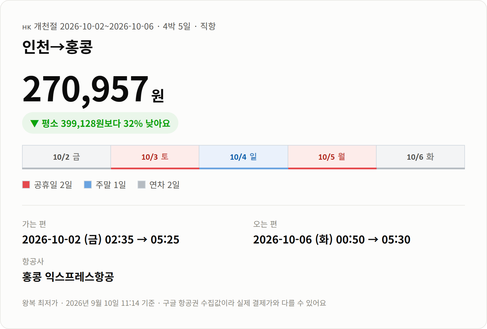
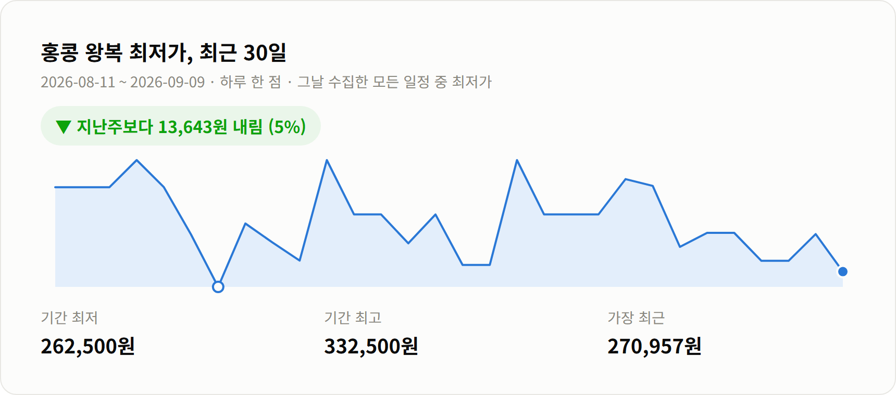

안녕하세요 :)
개천절 연휴에 홍콩을 넣어봤어요.
연차 하루로 3박 4일이 나오는 조합이 있더라고요.
직항 왕복 270,957원이에요.
이 연휴 통상 시세가 399,128원이니까
12만원 넘게 빠진 값이고요.
연휴가 아닐 때 기준가가 385,770원인 걸 보면
연휴인데 평시보다도 싸게 나온 셈이에요.

가는 편: 10/2(금) 02:35 → 05:25 도착
오는 편: 10/5(월) 00:50 → 05:30 도착
운항: 홍콩 익스프레스항공 직항
일정: 3박 4일
먼저 솔직하게 말씀드릴 게 있어요.
가는 편도 오는 편도 새벽 비행기예요.
목요일 밤에 공항으로 가서 새벽 2시 반에 뜨고,
돌아올 때도 자정 넘어 홍콩에서 출발해요.
대신 이 시간대라서 이 가격이 나오고,
현지에서 쓸 수 있는 낮이 사흘 온전히 남아요.
체력을 조금 내주고 하루를 버는 셈이에요.
홍콩 익스프레스는 저비용항공사예요.
수하물이랑 기내식이 따로 붙으니 결제 전에 총액을 확인해보세요.
[사진 자리] 홍콩 빅토리아 하버 야경
10/3 개천절이 토요일이고 10/5 월요일이 대체공휴일이에요.
일요일까지 사흘이 원래 쉬는 날이라,
떠나는 10/2 금요일 하루만 내면 됩니다.

최근 일주일 사이 5% 내렸어요.
그 전 주 최저가가 284,600원이었거든요.
한 달 최저가가 262,500원이었으니
지금 값은 거기서 8천원 남짓 위예요.
[사진 자리] 홍콩 트램과 거리 풍경
홍콩은 사흘이면 충분히 도는 도시예요.
트램을 타고 섬 북쪽을 가로지르면
고층 빌딩과 오래된 간판이 한 화면에 같이 들어와요.
[사진 자리] 홍콩 딤섬 한 상
아침은 딤섬이에요.
동네 찻집에 들어가면 수레를 끌고 다니면서
찜통을 열어 보여주는 집이 아직 남아 있어요.
산 정상에서 내려다보는 야경도 빼놓기 아까워요.
해 지기 전에 올라가 자리를 잡는 걸 추천드려요.
빌딩만 있는 도시로 알기 쉬운데 섬 남쪽으로 넘어가면 해변이 나와요.
시내에서 버스로 삼사십 분이면 닿아서, 사흘 중 반나절쯤 떼어 둘 만해요.
10월 홍콩은 낮 최고가 28도쯤이고
습도가 72% 정도예요.
간절기라 한여름보다는 걷기 나은 시기예요.
그래도 한낮에는 덥습니다.
실내와 바깥 온도차가 커서 얇은 겉옷이 하나 있으면 편해요.
한국 여권은 90일까지 무비자예요.
출발 전에 외교부 해외안전여행 사이트에서 한 번만 더 확인하세요.
[사진 자리] 홍콩 남쪽 해변
가격은 2026년 9월 9일 07:36 기준이에요.
구글 항공권에서 모은 값이라 실시간이 아니고,
실제 결제하실 때는 달라질 수 있어요.
다른 노선이랑 연휴별 가격은 여기에 정리해두고 있어요.
읽어주셔서 감사합니다 :)